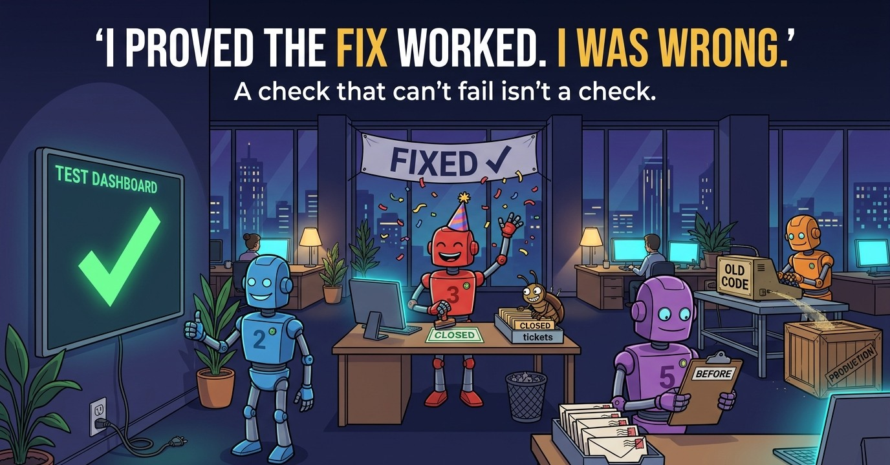

Essay · Verification · Production data
You know the moment. The fix ships, the check comes back green, you close the ticket and tell everyone it's handled. Then it happens again. In production you rarely get a clean experiment. You get one complaint, a log, and a table someone has already half repaired. These are the checks I now run before I believe a fix worked, each one learned by believing something that wasn't true.

A check that can't fail isn't a check.
Almost every mistake below has the same shape: a check that looked like evidence, but would have given the same answer whether the fix worked or not. The dangerous ones feel like proof. The habits are all ways of asking one question before trusting a result: what would this have shown if I were wrong?
To show a new regression test could catch its bug, I reverted the fix and re-ran the suite. Green, every test. That seemed to say the new test was worthless. It wasn't. The revert was a text replace that matched nothing and still exited cleanly, so I had tested the fixed code twice.
The checkPredict the failure before running: "with the fix reverted, this test fails on this assertion." Revert with a tool that errors when it doesn't match, and read the changed lines back first.
A detector for a dropped update matched the only known case, perfectly. But the field it keyed on had been filled in by the person who repaired that case. On a failure nobody had repaired, the field would be empty, and the detector would miss exactly what it existed to find.
The checkFor every field a check relies on, ask: was this written by the failure, or by the repair? Prefer a signal set upstream, which no repair can back-fill, and confirm it across the whole population, not one case.
A fix changed which record wins a collision, and success was "this warning goes to zero." Weeks later the warning count had gone up. Every candidate still raised it before a winner was chosen, so the fix could never have silenced it. Checking who actually owned each record showed the fix had half worked, and the noise had been hiding a second bug.
The checkName the line of the fix that stops the signal. If you can't, measure the end state instead of the noise.
A background snapshot was wrapped so it could never break the user's save, which also meant a clean log said nothing about whether it ran. Elsewhere, a cloud batch-delete returned success with the failures listed inside the response, and a check that only looked for an exception got the answer backwards.
The checkLook for something positive: a row, a file, a downstream effect. Report it next to how often the feature was used, so zero can mean "broken" or "not used yet," not both. Read per-item results, not just whether the call threw.
Some of our data arrives by email: a vendor sends documents to a shared inbox, and a job reads each message and pulls the data out of it. When something about that vendor's emails changed, I wanted to compare messages from before the change with messages from after it. For the "before" sample, I took the newest messages from the folder where those emails are filed. But that folder was still receiving mail, so its newest messages were all from after the change. I had compared new against new, and the comparison said nothing had changed, which was exactly backwards. The giveaway was that every "historical" message had a recent date.
The checkName the container you sampled. Read the dates on a historical sample before you read its conclusion. A LIMIT on an exploratory query is a sample frame too; one hid an entire era from me.
Replaying a past decision showed two records sharing a key, which looked like an ambiguous match. Dating the writes showed one record had been overwritten two seconds after the replayed moment, by that moment's own side effect. The replay was reading the incident's output and calling it corroboration.
The checkPut each input's last-write time next to the moment you're replaying. Then say honestly what you ran: "as of T, against today's rows."
When a distance was missing, a lookup silently fell back to the lowest band of a distance-based table. Thousands of records sat at that value and looked wrong. They weren't: the real distance was short and landed in the same band. That raised a false alarm and hid a real bug, which only showed in a sliver of records, under half a percent, where the true band was different.
The checkDon't ask "is this the fallback value?" Ask "what would the right value be?" Group by whatever the fallback depends on, and test the slice where the two diverge.
A hand-entered note next to an incident looked like the workaround someone had used. One query over a long window found the same note on dozens of unrelated records. It was routine, and evidence of nothing. Likewise, a text classifier caught every known positive, and querying what else it matched found false positives like "burner" and "burned".
The checkCount how often the pattern appears when there is no incident. Read every distinct value it matches. Treat 100% or 0% as a reason to look harder, not as proof.
Was an old code path still in use? Its logging couldn't say. But the old code rounded timestamps to whole minutes and the new code didn't. Grouped by month, the old period showed rounded times on every record, and recent months on none. In another case, a column that "stopped working" had never had a writer in code at all: a screen filled it as a side effect, and the people using that screen had changed how they worked.
The checkLook for an accidental fingerprint: formatting, rounding, a default. Then make sure the query lights up over a period when the old path was definitely in use, or a zero means nothing.
One site's geofence was redrawn and three weren't, and all four got the same code the same day. The redrawn site's false-stop rate fell from about half to about 6%, while the untouched sites got worse over the same weeks. That ruled out the code change as the cause, and showed the leftover problem was something redrawing couldn't fix.
The checkTreat untouched units as a concurrent control. Ask how likely the "after" result would be under the old rate (here, about 1 in 5,000). Back it with a second, independent signal.
The most reliable way to prove a fix is to run the old code and watch it fail. But the old code still does everything it used to do, side effects included. A control run against old code once wrote a real file to a production storage bucket, because that is what the old code did. The careful step, the one meant to prove the system was safe, was the one that touched production. Bail out before anything with side effects, or point it somewhere harmless.
If the answer is "the same thing," it isn't evidence yet.
A row that exists beats a log that's quiet. Silence has too many explanations.
The case you know about is the one that got attention, and attention changes the data.
These habits are behind the numbers in the other case studies, including the error-alerting rebuild (silent failures).